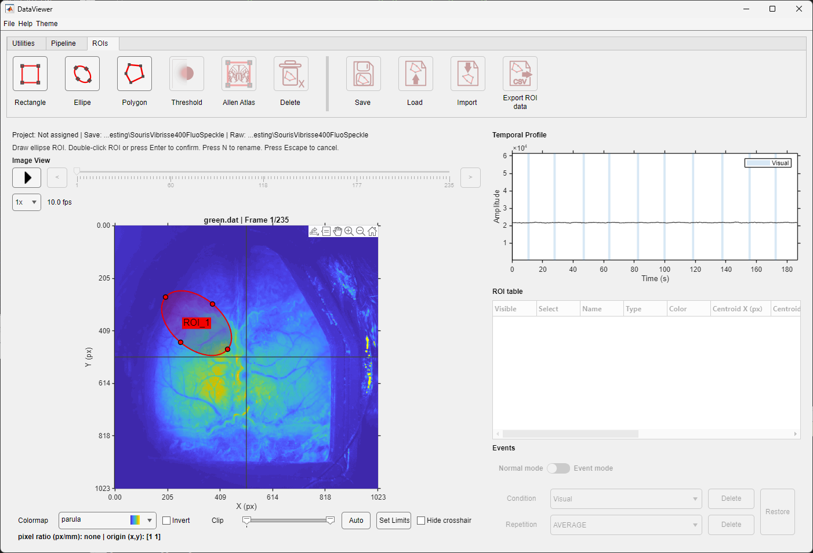
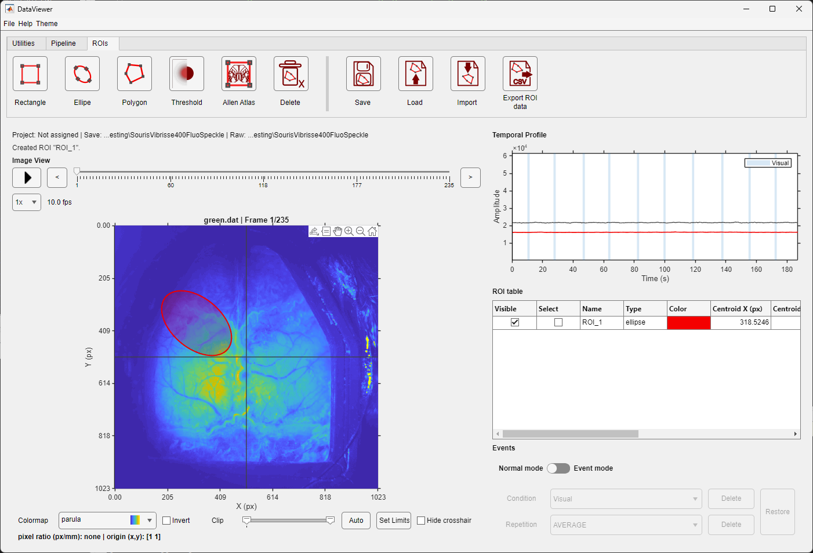
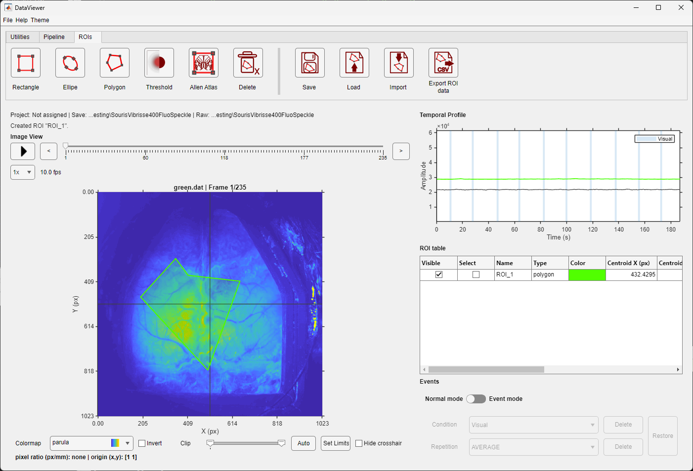
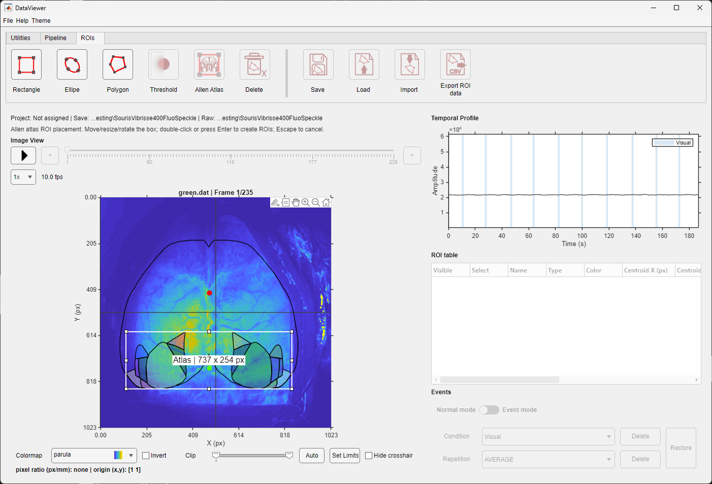
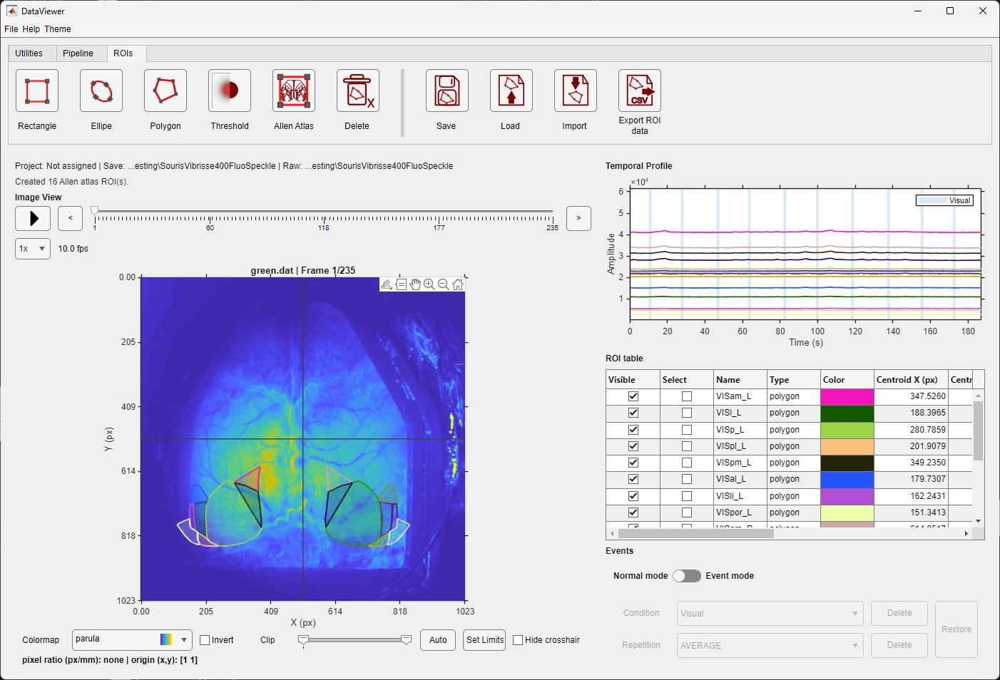
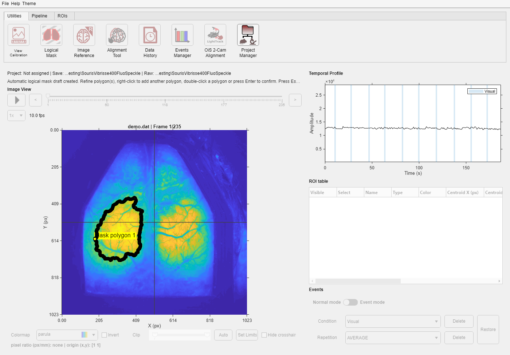

An ROI remains editable until it is confirmed by double-clicking inside it or pressing Enter.
ROI management is integrated into DataViewer. A region of interest (ROI) is a named shape used to summarize pixels over space and time. Drawing and editing remain in memory until you save a .roi file.
An ROI remains editable until it is confirmed by double-clicking inside it or pressing Enter.
| During drawing | After confirmation |
|---|---|
 An ellipse remains adjustable while its handles are visible. |  After confirmation, the ellipse is added to the table and its trace is displayed. |
Click successive vertices to shape a polygon. |  The confirmed polygon appears as a named table row. |
Threshold analyzes the currently displayed frame. The left preview overlays pixels that pass the threshold; the centre preview separates connected candidate ROIs.

The threshold dialog previews the selected pixels and connected candidate ROIs before adding anything to the table.

The creator searches and selects regions; final placement occurs in DataViewer.
| Placement preview | Confirmed atlas areas |
|---|---|
 Move and resize the placement box while comparing the outlines with the image. |  Confirmation adds the selected atlas areas to the ROI table. |
Scientific limitation
The atlas overlay is a user-positioned two-dimensional approximation. It does not estimate a transform, verify anatomical correspondence, or replace visual quality control. The positions of Bregma and Lambda are rough estimates: the Allen Mouse Brain Atlas does not provide mouse-skull landmark coordinates. See the Allen Brain Map Community Forum discussion.
Each ROI has one row. Visible shows or hides its image overlay and temporal trace. Select enters edit mode and marks the ROI for deletion or grouped operations. Double-click inside an edited ROI, or press Enter, to keep a geometry change; press Escape to restore the stored shape.
Click a Name cell to rename the ROI. Names are kept unique. Click the Color cell to open the color picker; the overlay, label, table cell, and temporal trace update together. The remaining columns report type, centroid, size, pixel count, and intensity statistics for the currently displayed frame. These intensity values are recalculated whenever the frame changes.
Select several rows to move or resize them as a group. Right-click the group to access Boolean operations:
| Operation | Result |
|---|---|
| Merge | Combines all selected pixels. |
| Intersect | Keeps only pixels shared by all selected ROIs. |
| XOR | Keeps pixels belonging to an odd number of selected ROIs. |
| Subtract | Subtracts later-selected ROIs from the first-selected ROI; selection order matters. |
An operation is blocked when it would produce holes that the current ROI model cannot represent. Deleting selected or all ROIs always asks for confirmation.
A logical mask defines the part of the image included during ROI creation and related calculations. Pixels outside the active mask are dimmed in the image view.

DataViewer first calculates the average image across the frames in the active view. This means the calculation follows the data currently being displayed, including the selected event view or UMT entry when applicable. Pixels without a finite value are ignored.
The initial mask contains the brightest 10% of pixels in that average image. DataViewer then joins nearby bright fragments, fills enclosed holes, removes isolated regions smaller than 0.1% of the image area, and lightly removes narrow bridges or protrusions. These cleanup distances are scaled to the image dimensions rather than fixed to one pixel size.
Up to the six largest remaining connected regions are converted into editable polygons. The result is only a starting estimate: inspect, move, reshape, add, or remove polygons before confirming the mask. If no usable region is found, create the mask manually.
Confirmation applies the mask immediately and saves it in DataParams.mat. Existing ROIs are clipped to the included area; DataViewer reports the changes and asks before deleting any ROI that would become empty. Right-click Logical Mask and choose Clear Existing Mask to return to full-image inclusion.
| Action | Details |
|---|---|
| Save | Writes a .roi file containing the shapes, names, colors, image context, and measurements. |
| Load | Replaces or appends. A size mismatch offers scaling or compatibility choices. |
| Import | Reads compatible ROI arrays from a selected file or MATLAB workspace variable, validates size, and rebuilds identifiers. |
| Export ROI data | Writes selected spatial measurements, continuous traces, or event-aligned traces to CSV. |
See the tutorial Working with ROIs and Organization of .roi files.